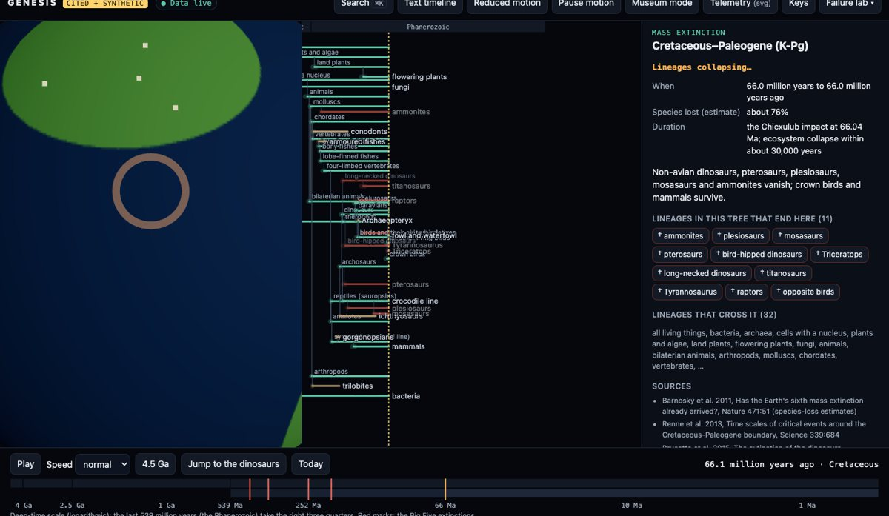
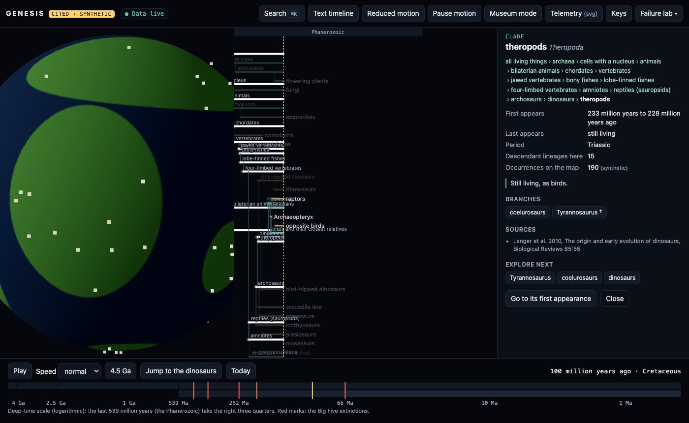
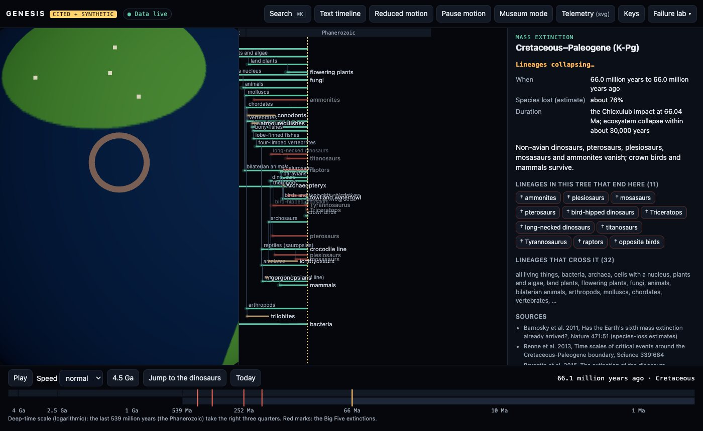
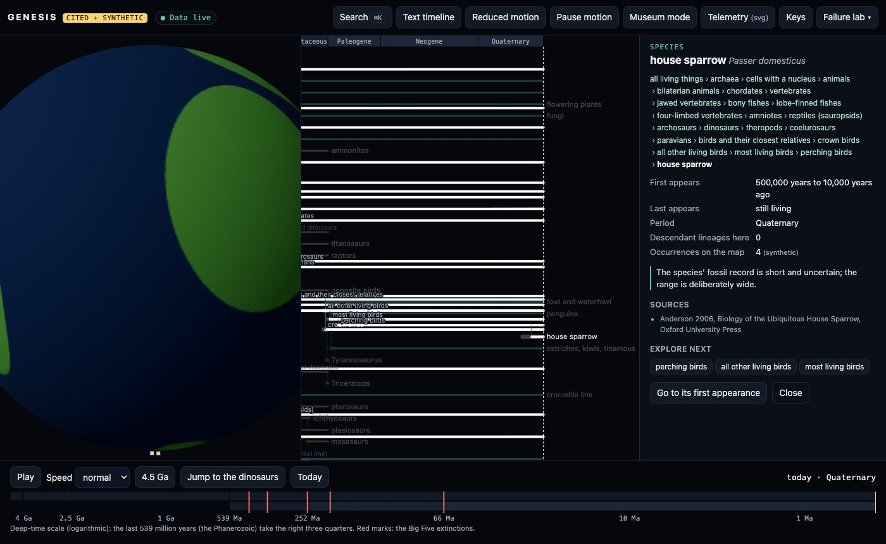
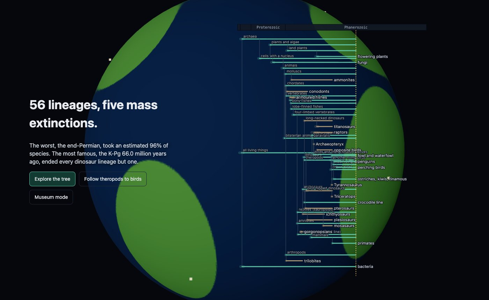
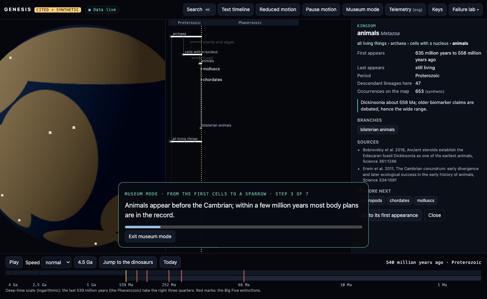

TypeScript · three.js · data visualisation · 2026-10
How Did a Dinosaur Line End Up as a Sparrow?
A motion-first tree of life over 4.5 billion years: 56 cited lineages with their dates kept as ranges, the Big Five mass extinctions, synthetic fossils on simplified drifting continents, a K-Pg sequence in which 11 lineages collapse while birds cross, and a 24-step ancestry from a house sparrow back to the first cells.

Built from blueprint 05 of a written build book (Volume V, motion-first products) as one vertical slice. What is real: the 56 clades and species, their first and last appearances, the five mass extinctions and the geological time scale are curated from 48 published sources, named on every entry. What is not: the fossil occurrences are synthetic, and the continents are seven simplified blocks between four keyframes, not a plate reconstruction. A teaching-scale summary, not a phylogeny inferred here. Not built: a real occurrence database, real paleogeographic rotations, species media and narrated tours, graph database, PostGIS, Kafka, Terraform and cloud deployment, single sign-on, billing.
01 — The problem
Birds are dinosaurs, and the evidence for it is spread over taxonomy, the fossil record, geological time and maps of continents that no longer exist. Most of it is also uncertain: a first appearance is a range of dates, not a date. Can one interactive page let a visitor follow a lineage through 4.5 billion years, see what an extinction removed and what crossed it, and keep the uncertainty visible the whole way?
The build book's rule for this volume is that the public page is the product and motion has to carry meaning: here, time moving, branches appearing when the evidence allows, and branches collapsing because a lineage ended. Blueprint 5 of ten, built as its demo scenario end to end.
02 — What I built
A Next.js site that runs entirely in the browser, plus a Fastify API on PostgreSQL behind the same interface, started by one docker compose up.
- A cited backbone: 56 taxa from the first life to a house sparrow, the Big Five extinctions and the ICS time scale, every entry with its sources and its dates as
[youngest, oldest]ranges. - Integrity checks that refuse a tree with a missing parent, a cycle, an unknown source, a reversed range, a descendant that could appear before its ancestor, or a clade that outlives its parent.
- A time-tree on a deep-time axis, drawn with SVG, Canvas or WebGL depending on how many branches are visible.
- A globe that goes from molten to ocean world to drifting continents, with synthetic occurrences placed for the current time.
- Extinction sequences (impact, collapse, aftermath) on a motion clock, and museum mode playing a structured scene script, offline-capable.
03 — How it was built
- 01
Facts with their sources and their uncertainty
Each taxon carries a first appearance and, if extinct, a last appearance, both as ranges, plus the sources they come from: Dinosauria from 243 to 231 million years ago because Nyasasaurus may or may not be a dinosaur; crown birds from 72 to 66.7 because Asteriornis is the oldest well-dated one. The Big Five come with their age ranges and species-loss estimates from Barnosky et al. 2011: 86%, 75%, 96%, 80% and 76%. A validator checks every taxon against every ancestor, not only its parent, and the tests break the tree twelve different ways to prove each check fires.
if (t.first[1] > parent.first[1]) errs.push(`${t.id}: may appear before its parent can`); if (parent.last && (!t.last || t.last[0] > parent.last[1])) errs.push(`${t.id}: outlives its parent`); - 02
Time as the axis everything shares
One clock drives the tree, the globe and the timeline. Time runs on a logarithmic deep-time axis, so 4.5 billion years and the last 66 million both get room: the Phanerozoic takes the right three quarters. A branch appears when time passes the oldest end of its first-appearance range, and the faded start of the branch is the range itself. The landing chapters move that same clock by scrolling, from a molten Earth through an ocean world to continents and land plants.
- 03
One renderer per scale
Under 250 visible branches the tree is SVG: labelled, every branch a focusable button with a full text description. Up to 2,500 it is Canvas, and above that WebGL with the time cut done in the fragment shader. A 20,000-leaf synthetic tree lays out in under 100 ms and runs at 60 frames a second on WebGL; zooming into it hands over to Canvas and then SVG, which an e2e test checks in that order.
- 04
The K-Pg sequence
Triggering the K-Pg runs impact, collapse, aftermath on a deterministic clock: a ring at Chicxulub's position for 66 million years ago, then the 11 lineages in this tree that end at the boundary fade while the rows close up. The ones lost are ammonites, plesiosaurs, mosasaurs, pterosaurs, bird-hipped dinosaurs, Triceratops, long-necked dinosaurs, titanosaurs, Tyrannosaurus, raptors and opposite birds. Ichthyosaurs are not among them; they were gone about 28 million years earlier. The screenshots for the case study exposed a bug: the motion clock kept running while paused, so Pause did not freeze the collapse. There is now a clock that holds, and a test for it.
- 05
A sparrow's ancestry
Searching for the house sparrow opens a 24-step lineage, animated as breadcrumbs, from all living things through animals, vertebrates, amniotes, archosaurs, dinosaurs, theropods, paravians and crown birds to perching birds. Every step is clickable and cited. In the database the same path is a recursive SQL query, and a test checks it against the domain code for four taxa, along with descendants, time snapshots at six ages, losses at all five extinctions, and fossil queries by subtree, age and box (also across the 180° meridian).
- 06
Museum mode, and what goes wrong
A guided tour is a structured scene script of seven steps. The kiosk player pauses when a visitor touches it, resumes after a quiet period, and skips a step it cannot show instead of freezing. A service worker caches the page and data, and an e2e test reloads it offline. Two more bugs were found and fixed on the way. A database CHECK refused a synthetic occurrence at latitude −91.8° on the Antarctic block, which turned out to be a generator bug. And single-branch chains (mammals, primates, humans) shared one row, so one branch's click target covered another's; now every single-branch clade gets its own row.
04 — Results
The demo. Following theropods: the lineage is framed and bright, everything else recedes, and the globe shows the group's (synthetic) occurrences:

The K-Pg extinction partway through the collapse:

A house sparrow's ancestry, 24 steps back to the first cells:



| Event | Species lost | Lineages here |
|---|---|---|
| End-Permian | ~96% | 2 |
| End-Triassic | ~80% | 1 |
| K-Pg | ~76% | 11 |
Checks. The tree validates with no problems, and twelve kinds of breakage are each caught. Every fact is sourced and every source is used. SQL and domain answers are identical for lineages, descendants, snapshots, extinction losses and fossil queries. Coverage of the domain and motion code is 98% of statements. The API validates every response against its OpenAPI document; another institution gets 404 on this museum's tours, and row-level security blocks a query with no WHERE clause.
Performance. 60 FPS with a real GPU on the curated tree during playback and on the 20,000-leaf tree with 5,897 branches visible. The API on one process, sharing the machine with four other builds: 2,372 requests a second at p95 27.6 ms.
Watch the 2 min 21 s captioned recording of the whole scenario.
05 — What I'd do next
- Load a real taxonomy (for example the Open Tree of Life synthesis for a few thousand taxa); the layout and renderers already handle 20,000 leaves.
- Replace the synthetic occurrences with Paleobiology Database records and the ellipse blocks with published plate rotations.
- Show how uncertain each extinction loss estimate is, not only the central figure.
- Species pages with images and narrated tours for museum mode.